변리사-1차(3교시) (2011-02-27 기출문제)
1. 그림과 같이 한쪽 끝이 열린 실린더 위에서 소리굽쇠를 쳤다. 실린더에 담긴 물의 수위를 낮추며 실린더의 울림소리와 소리굽쇠가 공명할 때마다 실린더 공기부분의 길이를 측정하였다.
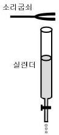
첫 번째, 두 번째 공명에서 그 길이가 각각 14.2 cm와 44.2 cm일 때, 이에 대한 설명으로 옳은 것만을 보기에서 있는 대로 고른 것은? (단, 공기 중에서 음속은 340 m/s 이다.)
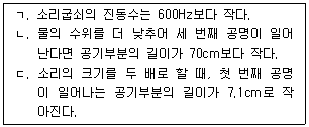
- ㄱ
- ㄴ
- ㄱ, ㄴ
- ㄱ, ㄷ
- ㄴ, ㄷ
(정답률: 알수없음)

2. 그림과 같이 질량 M, 반지름 R인 원형 고리가 정지 상태에서 높이 h인 경사면을 따라 마찰력에 의해 미끄러지지 않고 굴러 내려간다.
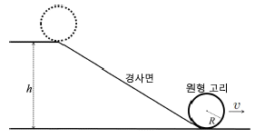
원형 고리가 바닥에 도달한 순간 질량중심의 속도를 v라 할 때, 이에 대한 설명으로 옳은 것만을 보기에서 있는 대로 고른 것은? (단, 중력가속도는 g이고, 공기저항은 무시한다.)
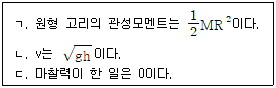
- ㄱ
- ㄴ
- ㄷ
- ㄱ, ㄴ
- ㄴ, ㄷ
(정답률: 알수없음)
3. 그림은 A에서 B 방향으로 0.5 A의 전류가 흐르고 있는 회로의 일부를 나타낸 것이다. 저항은 10 Ω이고, 전지의 기전력은 2 V이다.
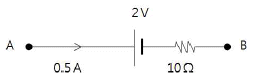
두 점 A, B의 전위를 각각 VA, VB 라고 할 때, VA - VB는? (단, 전지의 내부저항은 무시한다.)
- 2 V
- 3 V
- 5 V
- 6 V
- 7 V
(정답률: 알수없음)
4. 그림과 같이 공기 중에 전하량 +Q인 점전하와 한 변의 길이가 L인 가상의 정사각형이 있다. 점전하와 정사각형의 중심 사이의 거리가 L/2 일 때, 이 정사각형 내부를 통과하는 전기장 선속(또는 전기장 다발)의 크기는? (단, 공기의 유전율은 ε0이다.)
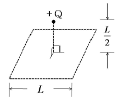
- Q / 8ε0
- Q / 6ε0
- Q / 4ε0
- Q / 2ε0
- Q / ε0
(정답률: 알수없음)
5. 그림과 같이 한 변의 길이가 1m인 정사각형의 단면을 갖는 기둥에 도선을 200회 감아 코일을 만들었다. 이 코일에 z축 방향으로 시간 t에 따라 변하는 자기장 B(t) = 10-3 × (10t – t2)를 가했을 때, t = 1인 순간 기전력의 크기는 얼마인가? (단, t의 단위는 초(s), 자기장의 단위는 테슬라(T)이고, 기둥은 자성체가 아니다.)
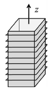
- 0.8 V
- 1.2 V
- 1.6 V
- 2.0 V
- 2.4 V
(정답률: 알수없음)
6. 그림과 같이 피스톤이 달린 단열된 실린더 안에 온도 100℃, 질량 60 g인 액체상태의 물이 있다. 실린더 내부 압력을 1기압으로 유지한 채 열을 공급하여 액체상태의 물이 모두 100℃의 기체상태가 되었다. 물의 밀도는 액체상태일 때 1.0×103 kg/m3, 기체상태일 때 0.6 kg/m3이고, 물의 기화열은 1기압 하에서 2.3×106 J/kg 이다.
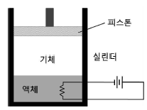
이 과정에 대한 설명으로 옳은 것만을 보기에서 있는 대로 고른 것은? (단, 1기압은 1.0×105 N/m2이고, 피스톤의 마찰력은 무시한다.)
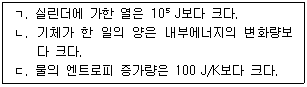
- ㄱ
- ㄴ
- ㄱ, ㄴ
- ㄱ, ㄷ
- ㄴ, ㄷ
(정답률: 알수없음)
7. 폭이 10 nm인 일차원 무한 퍼텐셜 우물에 갇힌 전자의 바닥상태에너지는 E0이다. 우물의 폭을 20 nm로 바꾼 경우, 전자가 첫 번째 들뜬상태에서 바닥상태로 전이할 때 방출되는 광자의 에너지를 E0으로 옳게 나타낸 것은?
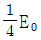
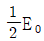
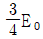
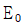
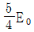
(정답률: 알수없음)
8. 건물 옥상에서 속력 40 m/s로 수평으로 던져진 물체가 지표면에 닿는 순간, 속력이 50 m/s였다. 옥상으로부터 지표면에 도달하기까지 걸리는 시간은 얼마인가? (단, 공기의 저항은 무시하며, 중력가속도는 10 m/s2이다.)
- 2 s
- 3 s
- 4 s
- 5 s
- 6 s
(정답률: 알수없음)
9. 사람 A, B가 같은 속도 v로 날아가는 질량이 같은 2개의 테니스공에 각각 시간 △t, 2△t 동안 라켓으로 일정한 힘 FA, FB를 가하여 두 공 모두 –2v의 속도로 날아가게 하였다. 이에 대해 옳은 것만을 보기에서 있는 대로 고른 것은? (단, 공기의 마찰력과 중력에 의한 영향은 무시한다.)
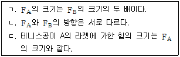
- ㄱ
- ㄷ
- ㄱ, ㄴ
- ㄱ, ㄷ
- ㄴ, ㄷ
(정답률: 알수없음)
10. 수소 원자의 보어모형에서 에너지는 주양자수 n에 대하여
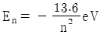
로 주어진다. 바닥상태에 있는 수소 원자가 12.75 eV의 광자를 흡수하여 들뜬상태가 되었다고 한다. 이때 들뜬상태에 있는 수소 원자의 전자의 궤도 각운동량은 얼마인가? (단,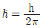
이고, h는 플랑크상수이다.)- 2
- 3
- 4
- 9
- 16
(정답률: 알수없음)
11. 다음은 임의의 중성 원자 A∼D의 각 전자 껍질에 채워진 전자의 수를 나타낸 것이다.
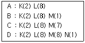
기체 상태인 바닥 상태의 원자 A∼D에 대한 설명으로 옳은 것은? (단, K, L, M, N은 전자 껍질이다.)
- 음이온이 되기 가장 쉬운 것은 A이다.
- 양이온이 되기 가장 쉬운 것은 D이다.
- 원자 반지름은 B가 C보다 작다.
- B와 C에 존재하는 홀전자수는 다르다.
- B와 D는 같은 주기 원소이다.
(정답률: 알수없음)
12. 다음은 바닐린(vanillin)의 구조식이다.
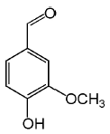
바닐린에 포함되어 있는 작용기로 옳은 것만을 보기에서 있는 대로 고른 것은?
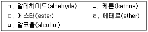
- ㄱ, ㄹ
- ㄴ, ㄷ
- ㄱ, ㄹ, ㅁ
- ㄴ, ㄷ, ㅁ
- ㄷ, ㄹ, ㅁ
(정답률: 알수없음)
13. 다음은 계수를 맞추지 않은 프로페인(C3H8)의 연소 반응식이다.
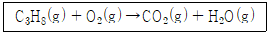
273℃, 1 atm에서 0.2 mol의 프로페인을 완전히 연소시키기 위해 필요한 산소의 최소 부피는? (단, 산소는 이상 기체 방정식을 따르고, 0℃에서 RT = 22.4 Lㆍatm/mol이다.)
- 11.2 L
- 22.4 L
- 33.6 L
- 44.8 L
- 56.0 L
(정답률: 알수없음)
14. 다음은 저스핀인 Co(NH3)63+에서 Co3+ 이온의 바닥 상태에서의 d-전자 배치와 d-d 전이의 흡수선 파장을 나타낸 것이다.
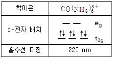
고스핀인 CoF63-에서 Co3+ 이온의 바닥 상태에서의 홀전자수와 d-d 전이의 흡수선 파장을 옳게 나타낸 것은? (순서대로 홀전자수, 흡수선 파장)
- 0, 20 nm보다 길다.
- 2, 220 nm보다 짧다.
- 2, 220 nm보다 길다.
- 4, 220 nm보다 짧다.
- 4, 220 nm보다 길다.
(정답률: 알수없음)
15. 수용액에서 포도당(D-glucose)은 그림과 같이 사슬형과 고리형으로 존재할 수 있다.
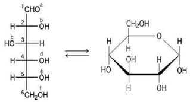
수용액에서 사슬형 포도당이 고리형으로 바뀌면서 새로운 화학 결합이 만들어질 때, 결합하는 탄소(번호)와 산소(알파벳)로 옳은 것은?
- 탄소- 1, 산소 – e
- 탄소 - 2, 산소 – f
- 탄소 - 4, 산소 - b
- 탄소- 5, 산소 – a
- 탄소 - 6, 산소 - c
(정답률: 알수없음)
16. 다음은 에테인의 수소가 염소로 치환된 어떤 화합물의 1H NMR 스펙트럼이다.
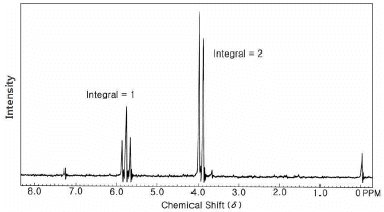
이에 해당하는 화합물로 옳은 것은?
- CH3CH2Cl
- CHCl2CH3
- CH2ClCH2Cl
- CHCl2CH2Cl
- CHCl2CHCl2
(정답률: 알수없음)
17. 표는 25℃에서 세 가지 물질의 1.0 M 수용액을 각각 그림과 같이 전기 분해하였을 때 각 전극에서 얻어진 물질을 나타낸 것이다.
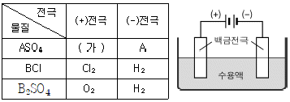
이에 대한 설명으로 옳은 것만을 보기에서 있는 대로 고른 것은? (단, A, B는 임의의 금속 원소이다.)
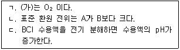
- ㄱ
- ㄴ
- ㄱ, ㄷ
- ㄴ, ㄷ
- ㄱ, ㄴ, ㄷ
(정답률: 알수없음)
18. 다음은 25℃에서 옥살산 칼슘(CaC2O4)의 용해 평형과 관련된 반응식과 평형 상수이다.
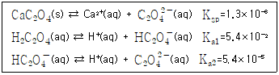
과량의 고체 옥살산 칼슘으로 포화된 수용액에서 옥살산 칼슘의 용해도에 대한 설명으로 옳은 것만을 보기에서 있는 대로 고른 것은? (단, 용해도의 단위는 mol/L이다.)
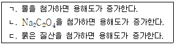
- ㄱ
- ㄷ
- ㄱ, ㄴ
- ㄱ, ㄷ
- ㄴ, ㄷ
(정답률: 알수없음)
19. 그림은 포도당 수용액 500 g을 1 atm 상태에서 가열할 때 시간에 따른 수용액의 온도 변화를 나타낸 것이다.
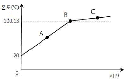
이에 대한 설명으로 옳은 것만을 보기에서 있는 대로 고른 것은? (단, 물의 몰랄 오름 상수 Kb는 0.52℃/m이다.)
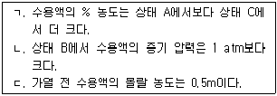
- ㄱ
- ㄷ
- ㄱ, ㄴ
- ㄴ, ㄷ
- ㄱ, ㄴ, ㄷ
(정답률: 알수없음)
20. 다음은 산화철(Ⅲ)(Fe2O3)을 열분해하여 철(Fe)을 얻는 화학 반응식과 그와 관련된 열화학 자료이다.
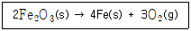
이 자료로부터 산화철(Ⅲ)을 열분해하여 철(Fe)을 얻을 수 있는 가장 낮은 온도는? (단, 온도에 따른 표준 생성 엔탈피와 표준 엔트로피의 변화는 무시한다.)
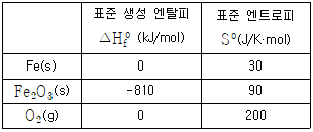
- 1500 K
- 2000 K
- 2500 K
- 3000 K
- 3500 K
(정답률: 알수없음)
21. 다음 문장에서 A, B, C에 들어갈 적합한 단어를 순서대로 나열한 것은?
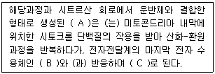
- 물, 수소, 산소
- 산소, 물, 수소
- 산소, 수소, 물
- 수소, 물, 산소
- 수소, 산소, 물
(정답률: 알수없음)
22. 호흡과 관련된 설명으로 옳은 것만을 보기에서 있는 대로 고른 것은?
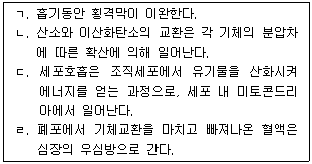
- ㄱ, ㄴ
- ㄴ, ㄷ
- ㄷ, ㄹ
- ㄱ, ㄴ, ㄷ
- ㄴ, ㄷ, ㄹ
(정답률: 알수없음)
23. 세포주기 중 간기에 대한 설명으로 옳은 것만을 보기에서 있는 대로 고른 것은?
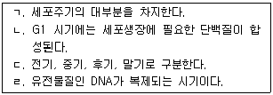
- ㄱ, ㄴ
- ㄱ, ㄹ
- ㄷ, ㄹ
- ㄱ, ㄴ, ㄹ
- ㄱ, ㄷ, ㄹ
(정답률: 알수없음)
24. 남성 생식기의 구조와 기능에 대한 설명으로 옳지 않은 것은?
- 꼬불꼬불한 관으로 되어 있는 부정소는 정소에서 만들어진 정자가 일시적으로 보관되는 곳으로, 이곳을 지나면서 정자가 성숙된다.
- 한 쌍의 정낭은 정자가 사용하는 대부분의 에너지를 제공하는 과당을 포함한 진한 액체를 분비한다.
- 사정관은 정낭에서 나온 관, 전립선에서 나온 관, 요도구선에서 나온 관과 하나로 합쳐진 후 요도와 연결된다.
- 전립선은 정자에게 영양이 되는 묽은 액체를 분비하여 정자의 활동을 활발하게 한다.
- 요도구선은 알칼리성 점액을 분비하여 요도에 남아 있을 수 있는 오줌의 산성을 중화시킨다.
(정답률: 알수없음)
25. 헤모글로빈의 특성에 대한 설명으로 옳은 것만을 보기에서 있는 대로 고른 것은?
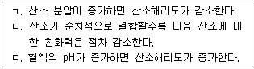
- ㄱ
- ㄴ
- ㄷ
- ㄱ, ㄴ
- ㄱ, ㄷ
(정답률: 알수없음)
26. 진핵세포와 원핵세포에서 공통적으로 존재하는 유전자발현 조절 단계는?
- mRNA에서 인트론이 제거되는 단계
- 오페론에 의한 조절이 일어나는 단계
- DNA에서 mRNA가 만들어지는 전사(transcription) 단계
- mRNA의 모자형성(capping)과 꼬리첨가(tailing) 단계
- 해독(translation)된 폴리펩티드가 당화(glycosylation)되는 단계
(정답률: 알수없음)
27. 유성생식을 하는 생물체는 무성생식을 하는 생물체에 비해 생식의 빈도가 매우 낮은 편이지만, 적응도(fitness)는 더 높다. 그 이유가 되는 유성생식 생물체의 특징으로 가장 적합한 것은?
- 성장에 더 많은 시간을 필요로 하기 때문이다.
- 세포 크기가 크기 때문이다.
- 제놈(genome) 크기가 크기 때문이다.
- 자손의 유전적 변이가 다양하기 때문이다.
- 많은 개체수를 생산할 수 있기 때문이다.
(정답률: 알수없음)
28. 군집에 대한 설명으로 옳은 것만을 보기에서 있는 대로 고른 것은?
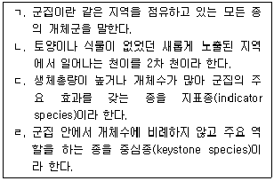
- ㄱ, ㄴ
- ㄱ, ㄹ
- ㄴ, ㄷ
- ㄷ, ㄹ
- ㄱ, ㄷ, ㄹ
(정답률: 알수없음)
29. 한 분자의 포도당이 해당과정을 거쳐 시트르산 회로를 마쳤을 때, 최종적으로 생성되는 ATP, NADH, FADH2의 분자수는?
- ATP : 1, NADH : 4, FADH2 : 4
- ATP : 2, NADH : 8, FADH2 : 2
- ATP : 3, NADH : 6, FADH2 : 4
- ATP : 4, NADH : 8, FADH2 : 2
- ATP : 4, NADH : 10, FADH2 : 2
(정답률: 알수없음)
30. 다음은 유전자 내 단일염기변이를 검출하기 위해 자주 사용하는 제한효소 단편분석(RFLP: Restriction Fragment Length Polymorphism) 과정을 순서없이 기술한 것이다. 실험 과정을 순서대로 올바르게 나열한 것은?
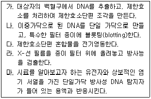
- 가 → 나 → 다 → 마 → 라
- 가 → 다 → 나 → 마 → 라
- 가 → 마 → 나 → 다 → 라
- 나 → 가 → 라 → 마 → 다
- 마 → 다 → 나 → 라 → 가
(정답률: 알수없음)
31. 그림은 어느 지역의 지질단면도이다.
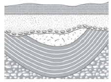
이 지역의 지질구조에 대한 설명으로 옳지 않은 것은?
- 습곡이 있음
- 융기 현상이 있었음
- 침식 작용을 받았음
- 시간적으로 불연속적인 지층이 있음
- 배사 구조를 보임
(정답률: 알수없음)
32. 그림은 지표상의 기온이 20℃, 이슬점이 12℃인 공기가 해발고도 0 m에서 a, b, c를 거쳐 산의 반대편 해발고도 0 m인 지점에 도달하는 과정을 나타낸 것이다. a는 상승 응결 고도 H와 높이가 같은 산의 한 지점, b는 해발고도 2000 m인 산의 정상, c는 해발고도 300 m인 산의 한 지점이다. (단, 이슬점 감률은 0.2℃/100m, 건조 단열 감률은 1℃/100m, 습윤 단열 감률은 0.5℃/100m이다.)
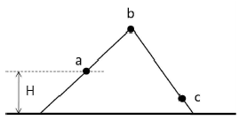
이에 대한 설명으로 옳은 것만을 보기에서 있는 대로 고른 것은?
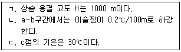
- ㄱ
- ㄴ
- ㄱ, ㄴ
- ㄴ, ㄷ
- ㄱ, ㄴ, ㄷ
(정답률: 알수없음)
33. 지구의 내부에 대한 설명으로 옳은 것만을 보기에서 있는 대로 고른 것은?
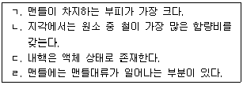
- ㄱ, ㄴ
- ㄱ, ㄷ
- ㄱ, ㄹ
- ㄴ, ㄹ
- ㄷ, ㄹ
(정답률: 알수없음)
34. 그림은 어느 날 높이가 15 m인 굴뚝에서 나온 연기가 퍼져 나가는 모습을 나타낸 것이다. (단, 연기의 온도는 고려하지 않는다.)
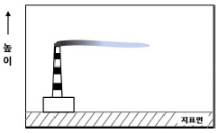
연기가 퍼져 나가는 모양으로 볼 때, 이 지역의 높이에 따른 기온 분포로 가장 적절한 것은?
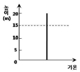
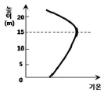
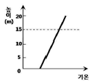
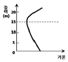
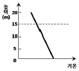
(정답률: 알수없음)
35. 지구에서 어떤 별을 관측하였는데, 겉보기등급과 절대등급이 각각 2등급으로 같았다. 지구에서 이 별까지의 거리는 얼마인가?
- 1 pc
- 10 pc
- 100 pc
- 1 kpc
- 10 kpc
(정답률: 알수없음)
36. 다음은 여러 성단의 H-R도이다.
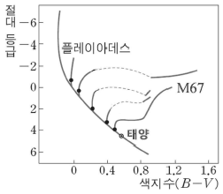
이 H-R도에 대한 설명으로 옳은 것만을 보기에서 있는 대로 고른 것은?
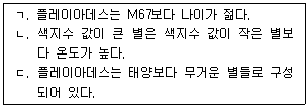
- ㄱ
- ㄴ
- ㄱ, ㄴ
- ㄱ, ㄷ
- ㄴ, ㄷ
(정답률: 알수없음)
37. 일정한 결정구조를 가지면서 화학조성의 차이를 나타내는 고용체 광물만을 보기에서 있는 대로 고른 것은?
- ㄱ, ㄴ
- ㄱ, ㄷ
- ㄴ, ㄷ
- ㄴ, ㄹ
- ㄷ, ㄹ
(정답률: 알수없음)
38. 그림 (가), (나)는 서로 다른 두 천체 망원경의 내부 구조와 빛의 경로를 나타낸 것이다.
이 두 망원경에 대한 설명으로 옳지 않은 것은?
- (가)는 물체의 상을 도립상으로 보이게 한다.
- (가)는 반사망원경이고, (나)는 굴절망원경이다.
- (나)는 (가)에 비해 색수차의 영향을 덜 받는다.
- A, B의 구경이 클수록 어두운 천체를 더 잘 관찰할 수 있다.
- 일반적으로 (가)는 소형망원경, (나)는 대형망원경으로 적합하다.
(정답률: 알수없음)
39. 해령과 관련된 내용으로 옳은 것은?
- 열류량은 해령에서 멀어질수록 증가한다.
- 해양판의 두께는 중앙해령에서 멀어지더라도 일정하다.
- 해양판의 밀도는 중앙해령에서 멀어질수록 감소한다.
- 해양의 수심은 해령에서 멀어지더라도 일정하다.
- 해양판의 한 지점은 시간이 지남에 따라 해령에서 점차 멀어진다.
(정답률: 알수없음)
40. 다음 중 공기의 단열 팽창에 따른 구름 생성의 원인이 아닌 것은?
- 지표면 공기의 국지적인 가열
- 지표면에서 공기의 수렴
- 지표면에서 공기에 작용하는 마찰력
- 전선상에서 공기의 상승 운동
- 지형에 의한 공기의 강제 상승
(정답률: 알수없음)
L1 / L2 = (v × 0.00083) / (v × 0.00259) = 0.142 / 0.442 ≈ 0.321
여기서 v는 소리의 속도를 나타낸다. 따라서, L2 = 0.321 × L1이다. 이를 이용하여 첫 번째 공명에서의 길이 L1과 공기부분의 길이 L의 관계를 구하면 다음과 같다.
L = L1 + x = L2 + 2x = 0.321L1 + 2x
여기서 x는 열린 쪽에서부터 공기부분의 길이를 나타낸다. 따라서, x = (L - 0.321L1) / 2이다. 첫 번째 공명에서의 길이 L1 = 14.2 cm일 때, x = (50 - 0.321 × 14.2) / 2 ≈ 8.6 cm이다. 따라서, 첫 번째 공명에서의 공기부분의 길이는 L1 + x ≈ 22.8 cm이다. 따라서, 정답은 "ㄱ"이다.